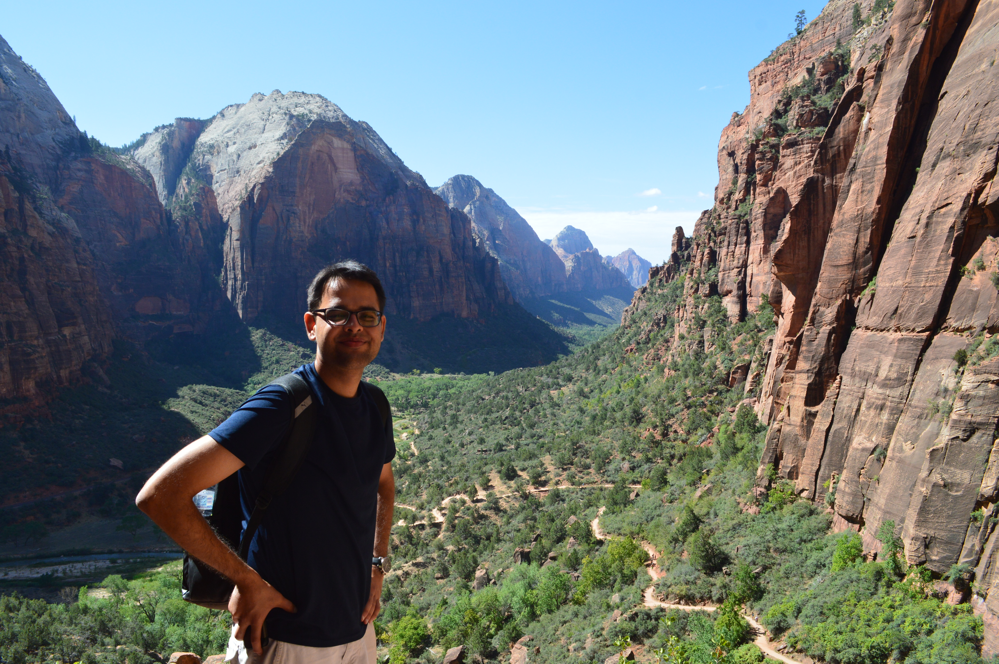

I am based in Silicon Valley and currently work on Self Driving Cars at Nvidia.
I am passionate about technology and have a varied interests, Embedded Systems, Blockchain development & Cloud Computing.
I have a Masters of Science degree (Embedded Systems) from the Department of Computer and Information Sciences, University of Pennsylvania and a Bachelors degree (Electronics and Communication Engineering) from the University of
Delhi.
Updates
- [ Sep 2018 ] Joined Nvidia as an Autonomous Vehicles Embedded Systems Software Engineer for Self Driving Cars
- [ Jul 2015 ] Joined Silicon Labs as a Product Test Engineer, MCU Wireless Products
- [ May 2015 ] Graduated from the University of Pennsylvania with MS in Embedded Systems
- [ Aug 2014 ] Teaching Assistant for Math 104 for Prof. Márton Hablicsek
- [ May 2014 ] Summer Internship at Silicon Labs, Austin, TX
- [ Jan 2014 ] Teaching Assistant for Math 114 for Prof. Wolfgang Ziller
- [ Aug 2013 ] Teaching Assistant for Math 104 for Prof. Chris Hays
- [ Aug 2013 ] Started my Masters of Science in Engineering (Embedded Systems) at the University of Pennsylvania
- [ Jun 2013 ] Graduated from the University of Delhi with a Bachelors in Engineering, Electronics and Communication.
Some Course and Side Projects
- Source: WebRTCHack: Realtime Communication via Javascript. Weekend Hack, 2015. Some APIs have changed over time. Free hosting takes time to load.
- Source Video: ESE 519: BrainWav Emotion Classification, Course Project, 2014
- Source: Build uCs in the Cloud, Summer Side Project. 2014
- Source: CLI Distributed Chat Application; UPenn Course Project, 2014.
- Paper and Python implementation of Machine Learning: Lyrics Assisted Music Prediction, Course Project 2014
- Source: Stellaris Guru Custom ARM Cortex-M3 board; Co-authored a lab manual book funded by Texas Instruments India, 2013.
- Source: nhack; NSIT Hackathon Weekend Hack. Built on Ruby on Rails, 2010
- Source: partlister : Inventory Management, Weekend Hack, Built on Ruby on Rails, 2010
- AnalytXLS: Android App Development, Side Project, 2010
- Video: Photo 1 Photo 2 ; Health Log Manager. TI India Analog Design Contest, 2010
- Basic Hardware-Software Codesign implementation of RSA Public Key Cryptographic Algorithm: An implementation on custom ARM cortex M3 board and custom XC3S250E based FPGA shield.